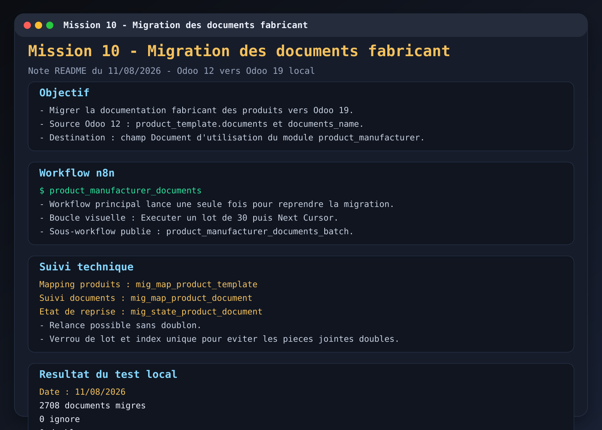

Enonce
Mise en place d'un workflow n8n pour migrer la documentation fabricant des produits depuis Odoo 12 vers Odoo 19. La migration utilise un systeme de lots, de suivi d'etat, de mapping et de reprise afin d'eviter les doublons et de pouvoir relancer le traitement.
Preuves
